Au nom de ses parents assassinés, Bruce Wayne mène
une guerre éternelle contre les criminels de Gotham City.
Il est vengeur. Il est la nuit.
BATMAN AU CINÉMA
Le personnage de Batman est un super héros de l'univers de DC Comics. Il a été créé par le dessinateur Bob Kane et le scénariste Bill Finger et apparaît pour la première fois dans le comic book Detective Comics en 1939. Batman se différencie de Superman, alors héros majeur de DC, car il n'a aucun pouvoir. Il sera porté au cinéma pour la première fois en 1943 par Lewis Wilson et bénéficiera de nombreux reboot, donnant l'occasion à de multiples acteurs d'interpréter l'homme chauve-souris. Voici les trois derniers :
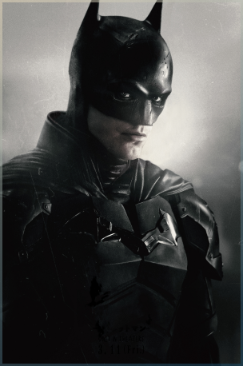
Robert Pattinson
(2022)
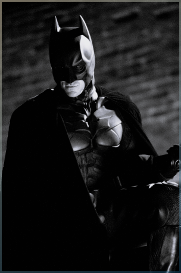
Christian Bale
(2006 - 2008 - 2012)
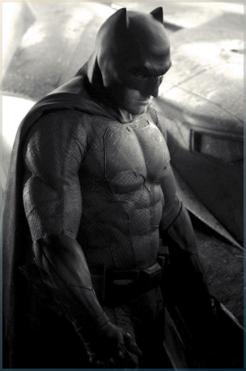
Ben Affleck
(2016 - 2017 / 2020 - 2023)
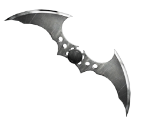
NÉMÉSIS
Batman souhaite éradiquer la criminalité de Gotham. C'est pourquoi il affrontera la plupart du temps des vilains sans capacités surnaturelles mais particulièrement violents ou psychopathes. Avec son introduction dans la Justice League il aura l'occasion de se mesurer à des antagonistes qui défient l'imagination et les lois de la physique. Parmi les derniers ennemis emblématiques que nous avons pu voir au cinéma, on retrouve :
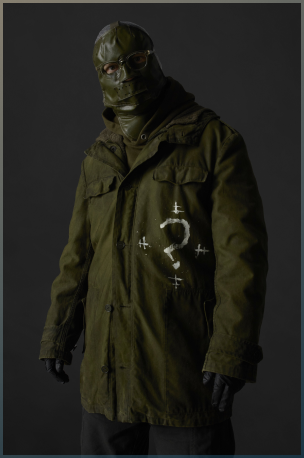
The Riddler — Paul Dano
(2022)
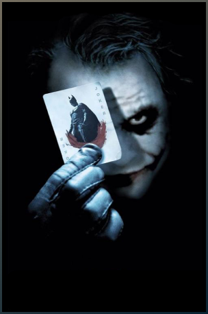
Le Joker — Heath Ledger
(2008)
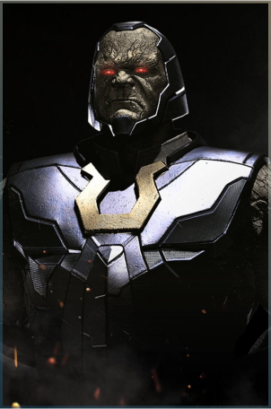
Darkseid — Ray Porter
(2022)
ALLIÉS
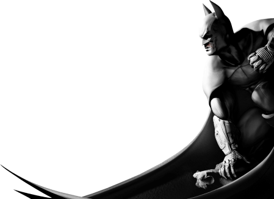
Alfred est le majordome des Wayne. À leur mort, il s'occupe de l'éducation du jeune Bruce avant de l'assister dans son rôle de Batman. Ce dernier rencontrera Catwoman dès le premier numéro des aventures de l'homme chauve-souris en 1940. Tantôt ennemie tantôt alliée, la jeune femme fatale fera tourner la tête de Batman à maintes reprises. Du côté de la police, Bruce pourra compter sur l'aide infaillible de James Gordon, "Jim", qui désire lui aussi nettoyer sa ville de la criminalité qui y règne.
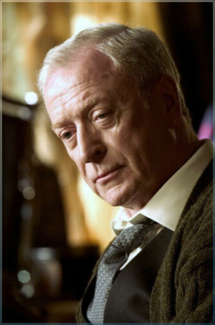
Alfred Pennyworth — Michael Caine
(2006 - 2008 - 2012)
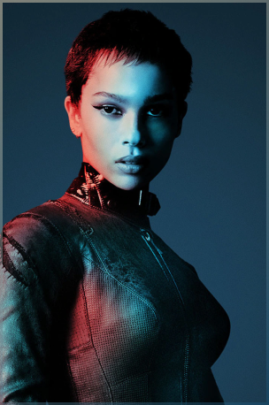
Catwoman — Zoé Kravitz
(2022)
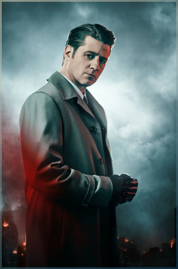
James Gordon
(2014 - 2019)
JUSTICE LEAGUE
Lorsque la Terre est menacée, les plus grands super-héros s'allient pour la protéger. Ils doivent cependant apprendre à se faire confiance mutuellement et à faire équipe, ce qui ne sera pas chose aisée. Ensemble ils forment la Justice League, les plus grands super-héros de la Terre, ceux vers qui le monde entier se tourne lorsque les menaces extraterrestres ou surnaturelles menacent son existence.
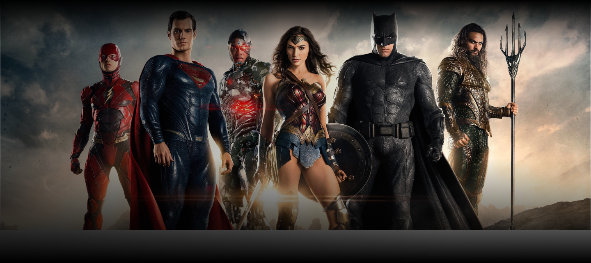
MULTIMÉDIA
Les bandes-annonces qui ont accompagné les dernières incarnations de Batman au cinéma.
La seule façon raisonnable de vivre en ce bas monde, c'est en dehors des règles.
The Dark Knight : Le Chevalier Noir —
Le Joker à Batman (2008)